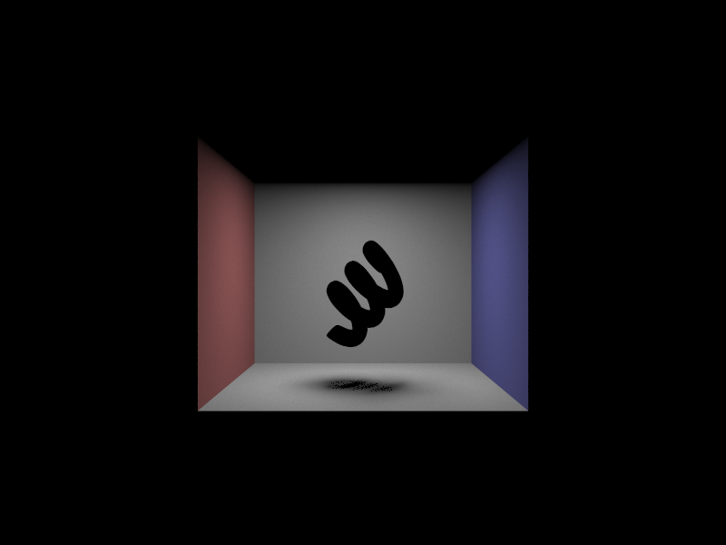

CS184/284A Spring 2025 Homework 3 Write-Up
Link to webpage: https://cal-cs184.github.io/hw-webpages-su25-etihwww
Link to GitHub repository: https://github.com/cal-cs184/hw-pathtracer-updated-super-awesome-name3

Overview
This project builds a path tracer that simulates how light travels and bounces around a 3D scene to create realistic images. implement key parts like ray generation, intersection tests, lighting calculations, global illumination, and acceleration structures (BVH) to make rendering faster. By the end, the renderer can handle direct and indirect lighting, soft shadows.Part 1: Ray Generation and Scene Intersection
Ray Generation
Convert pixel coords to normalized image space, then to sensor space: shift to the sensor center and scale by tan(fov/2) to get (x_, y_).
The camera-space ray is origin = camera_pos, direction = normalize( (x_, y_, -1) ).
Transform the ray direction (and origin) to world space, then normalize.
Set ray.min_t = nclip and ray.max_t = fclip.
Pixel Sampling
take ns_aa samples inside the pixel.
For each sample, repeat the ray-generation steps and accumulate radiance.
Average the ns_aa estimates and write the result to the framebuffer.
Primitive Intersection
To determine if a ray intersects a sphere, we solve for the parameter t in the equation
‖(o + t·d − c)‖² − R² = 0, where o is the ray origin, d is the ray direction,
c is the sphere’s center, and R is its radius. Expanding this equation produces a standard
quadratic form with coefficients a, b, and c. The intersection times are found using
t = (-b ± √(b² − 4ac)) / (2a). We select the smaller valid root (if it exists and is real), and if it lies
within the ray’s clipping range, an intersection is confirmed. The intersection record is then updated with the hit
normal (o + t·d − c).unit(), the bsdf, and other relevant properties.
Triangle-Ray Intersection (Möller–Trumbore)
This algorithm uses the Möller–Trumbore algorithm to see if a ray hits a triangle. It solves for three values: t (how far along the ray), and u, v (barycentric weights inside the triangle). If t is within the ray’s valid range and u, v, and 1 − u − v are each between 0 and 1, the hit is inside the triangle. It’s fast because it computes these in one go, without separately testing the plane and then the triangle.
|
|
|
|
|
|
|
|
|
Part 2: Bounding Volume Hierarchy
| file | time without BVH (sec) | time with BVH (sec) | primitives |
|---|---|---|---|
| cow | 22.4543 | 0.1512 | 5856 |
| maxplanck | 150.5058 | 0.5871 | 50801 |
| CBdragon | taking too long | 0.1730 | 100012 |
Using a BVH makes rendering much faster. On the cow scene (5,856 prims), time dropped from 22.45 s to 0.15 s (~149× faster). On maxplanck (50,801 prims), it fell from 150.51 s to 0.59 s (~256× faster). For CBdragon (100,012 prims), the version without BVH took too long to finish, while BVH rendered it in 0.17 s. In short: BVH turns a slow, brute-force check into a quick, structured search, giving huge speedups even on medium-sized scenes.
The Bounding Volume Hierarchy (BVH) speeds up ray–primitive intersection by organizing primitives into a tree.
At each BVHNode, a bounding box is built for all input primitives, and an axis is chosen at random for splitting.
The split position is the centroid along the chosen axis; for example, if the x-axis is chosen,
center = bbox.centroid().x gives the split coordinate. Using std::partition, the primitive list is divided so that
any primitive with a centroid less than the split coordinate is placed in the left half.
The construct_bvh function is then called recursively for the left and right halves until the number of primitives
in a node is less than max_leaf_size.
Choosing a random axis helps prevent worst-case scenarios. For example, with a very large mesh next to a group of very dense, tiny meshes, always choosing the longest axis can result in poor splits, where one child node repeatedly contains only a single primitive. Random axis selection breaks these worst cases and produces more balanced trees.
Part 3: Direct Illumination
Hemisphere Sampling
For each sample, generate a random direction in the local hemisphere using hemisphereSampler (with probability 1 / (2π)) and transform it to world space with o2w. Create a ray from hit_p in this direction. If the ray hits an object that emits light, add its contribution to the estimate using estimator += emission * isect.bsdf->f(w_out, -sample) * dot(w2o * isect.n, sample). After processing all samples, divide the total radiance by the number of samples and the sampling probability to get the average. Set direct_ray.min_t to EPS_F to avoid intersecting the starting surface.
Importance Sampling
For each scene light, call light->sample_L() to get a world-space direction,
distance, and sampling pdf. Cast a shadow ray from hit_p toward wi with
min_t = EPS_F and max_t = distToLight − EPS_F. If unoccluded, accumulate
L * BSDF(wo, wi) * cos(theta) / pdf. Sample delta (point) lights once; sample area lights
num_samples times and average. This usually produces less noise than uniform hemisphere sampling.
compare the noise levels in soft shadows when rendering with 1, 4, 16, and 64., with CBspheres_lambertian.dae
|
|
|

|
|
Light sampling usually produces clearer and less noisy results than uniform hemisphere sampling. In hemisphere sampling, many rays are sent in random directions that don’t hit a light, so lots of samples are wasted and shadows look grainy. In light sampling, rays are aimed directly toward lights, so most samples contribute useful lighting information. This makes the image converge faster to smooth, accurate lighting and shadows.
|
|
|

|
|
Part 4: Global Illumination
In at_least_one_bounce_radiance(), I created a new ray r_in(hit_p, o2w * w_in), where hit_p is the position of the current hit point, and w_in is the outgoing direction from isect.bsdf->sample_f(). If the current ray depth hasn’t reached the maximum depth, first calculate the one-bounce radiance at this point using one_bound_radiance(). If this new ray hits another surface and Russian Roulette doesn’t stop the process, at_least_one_bounce_radiance() is called again with the new ray. The radiance is accumulated as:
L_out += at_least_one_bounce_radiance(r_in, isect_in) * bsdf
* dot(w2o * isect.n, w_in) / pdf / CONT_PROB;
Each time the function is called, the depth decreases by one. The recursion ends when the depth reaches zero or Russian Roulette stops it. The continuation probability for Russian Roulette is 0.7. The final displayed radiance is the sum of the result from at_least_one_bounce_radiance() and zero_bound_radiance().
|
|

|
|
|
|
|
|

|
|
|
|
|
|
|
Part 5: Adaptive Sampling
In raytrace_pixel(), each sample gives a luminance value x_k from
est_radiance_global_illumination(). keep running sums
s1 = Σ x_k and s2 = Σ x_k² to estimate the mean and variance:
μ = s1 / n, σ² = (s2 − s1² / n) / (n − 1).
Every samplesPerBatch iterations, compute a 95% confidence half-width
I = 1.96 · σ / √n. If I ≤ maxTolerance · μ (with
maxTolerance = 0.05), then stop early, average the accumulated radiance
by n, write it to sampleBuffer, and record n in
sampleCountBuffer.
|
|
|
|
|
|
|

|
|
Acknowledgement of AI
I used AI to improve grammar and phrasing in English, and asked how to format equations in html.